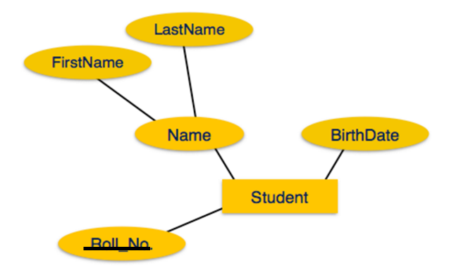
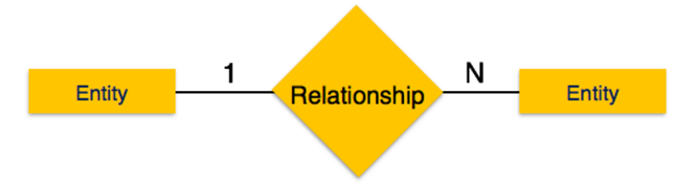
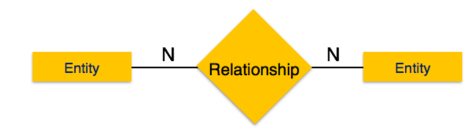
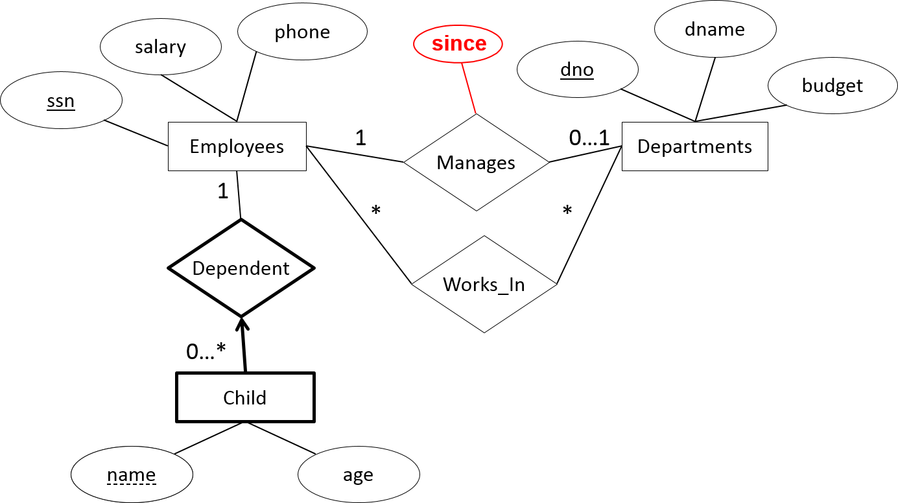
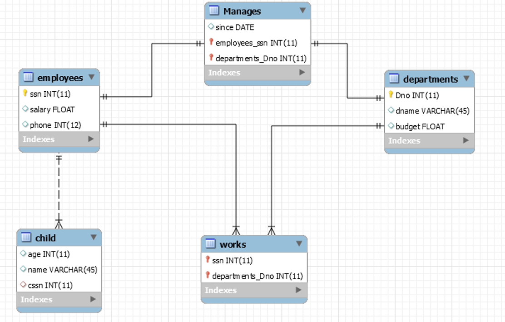

Coding Bootcamp: Introduction to database design
Course tasks
- What an ER-Diagram is
- ER components
- Understand the concept of the database schema
- SQL JOINS
Introduction
So far, we've just been working with one table at a time, and seeing what interesting data we can select out of that table. But actually, most of the time, we have our data distributed across multiple tables, and those tables are "related" to each other in some way
ER diagram
- The entity-relationship model (or ER model) is a way of graphically representing the logical relationships of entities (or objects) in order to create a database

ER Diagram Components (1/3)
Entity
Entities are represented by means of rectangles. Rectangles are named with the entity set they represent
Attributes
Attributes are the properties of entities. Attributes are represented by means of ellipses. Every ellipse represents one attribute and is directly connected to its entity (rectangle).
ER Diagram Components (2/3)
If the attributes are composite, they are further divided in a tree like structure. Every node is then connected to its attribute. That is, composite attributes are represented by ellipses that are connected with an ellipse.

ER Diagram Components (3/3)
ER Relationships


ER Relationships - Cardinalities (1/3)
- Relationships are represented by diamond-shaped box. Name of the relationship is written inside the diamond-box. All the entities (rectangles) participating in a relationship, are connected to it by a line
- A relationship where two entities are participating is called a binary relationship. Cardinality is the number of instance of an entity from a relation that can be associated with the relation
ER Relationships - Cardinalities (2/3)
One-to-one: When only one instance of an entity is associated with the relationship, it is marked as '1:1'. The following image reflects that only one instance of each entity should be associated with the relationship. It depicts one-to-one relationship.

One-to-many: When more than one instance of an entity is associated with a relationship, it is marked as '1:N'. The following image reflects that only one instance of entity on the left and more than one instance of an entity on the right can be associated with the relationship. It depicts one-to-many relationship

ER Relationships - Cardinalities (3/3)
Many-to-one: When more than one instance of entity is associated with the relationship, it is marked as 'N:1'. The following image reflects that more than one instance of an entity on the left and only one instance of an entity on the right can be associated with the relationship. It depicts many-to-one relationship

Many-to-many: The following image reflects that more than one instance of an entity on the left and more than one instance of an entity on the right can be associated with the relationship. It depicts many-to-many relationship.

ER Relationships - Relationship Loops
- Additionally, restrictions on the combinations of entities participating in an entity set are needed
- Cardinality annotations are used for this

ISA (1/2)
- When an entity type contains certain entities that have special properties not shared by all entities, this suggests two entity types should be created with an ISA relationship type between them
- Is also known as generalisation/specialisation.
- E.g. An Employee ISA Person and a Student ISA Person (see next slide)
- If Employee ISA Person then Employee inherits all the attributes of Person
ISA (2/2)

Structuring an ER (1/3)
Problem
- A company database needs to store information about employees (identified by ssn, with salary and phone as attributes), departments (identified by dno, with dname and budget as attributes), and children of employees (with name and age as attributes)
- Employees work in departments; each department is managed by only one employee; a child must be identified uniquely by name when the parent (who is an employee; assume that only one parent works for the company) is known. We are not interested in information about a child once the parent leaves the company
- Draw an ER diagram that captures this information
Structuring an ER (2/3)
Solution
- First, we shall design the entities and relationships
- “Employees work in departments…”
- “…each department is managed by only one employee…”
- “…a child must be identified uniquely by name when the parent (who is an employee; assume that only one parent works for the company) is known.”
Structuring an ER (3/3)

Structuring an ER (cardinalities) (1/2)
Solution
- Now, we will design the constraints.
- “…each department is managed by an employee…”
- “…a child must be identified uniquely by name when the parent (who is an employee; assume that only one parent works for the company) is known. “
- “We are not interested in information about a child once the parent leaves the company.”
Structuring an ER (cardinalities) (2/2)

Database Schema
- A database schema is the skeleton structure that represents the logical view of the entire database. It defines how the data is organized and how the relations among them are associated. It formulates all the constraints that are to be applied on the data
- A database schema defines its entities and the relationship among them. It contains a descriptive detail of the database, which can be depicted by means of schema diagrams. It’s the database designers who design the schema to help programmers understand the database and make it useful
Primaries and Foreign Keys
- A foreign key is a column or group of columns in a relational database table that provides a link between data in two tables. It acts as a cross-reference between tables because it references the primary key of another table, thereby establishing a link between them
- The majority of tables in a relational database system adhere to the foreign key concept. In complex databases, data in a domain must be added across multiple tables, maintaining a relationship between them

From ER to data base schema

DB Schema

Adding an attribute at a relationship

New DB Schema

SQL JOINS (1/3)
- SQL joins are used to combine rows from two or more tables
- An SQL JOIN clause is used to combine rows from two or more tables, based on a common field between them
- The most common type of join is: SQL INNER JOIN (simple join).
- An SQL INNER JOIN returns all rows from multiple tables where the join condition is met
SQL JOINS (2/3)
- Let's look at a selection from the "Orders" table:
| 10308 |
2 |
1996-09-18 |
| 10309 |
37 |
1996-09-19 |
| 10310 |
77 |
1996-09-20 |
| 1 |
Alfreds Futterkiste |
Maria Anders |
Germany |
| 2 |
Ana Trujillo Emparedados y helados |
Ana Trujillo |
Mexico |
| 3 |
Antonio Moreno Taquería |
Antonio Moreno |
Mexico |
SQL JOINS (3/3)
SQL JOIN
SELECT Orders.OrderID, Customers.CustomerName, Orders.OrderDate
FROM Orders
INNER JOIN Customers
ON Orders.CustomerID=Customers.CustomerID;
Result
| OrderID | CustomerName | rderDate |
| --- | --- | --- |
| 10308 | Ana Trujillo Emparedados y helados | 9/18/1996 |
| 10365 | Antonio Moreno Taquería | 11/27/1996 |
| 10383 | Around the Horn | 12/16/1996 |
| 10355 | Around the Horn | 11/15/1996 |
| 10278 | Berglunds snabbköp | 8/12/1996 |
Different SQL JOINs
- INNER JOIN: Returns all rows when there is at least one match in BOTH tables
- LEFT JOIN: Return all rows from the left table, and the matched rows from the right table
- RIGHT JOIN: Return all rows from the right table, and the matched rows from the left table
- FULL JOIN: Return all rows when there is a match in ONE of the tables
INNER JOIN (1/2)
Returns all rows when there is at least one match in BOTH tables

## INNER JOIN (2/2)
SELECT * FROM TableA
INNER JOIN TableB
ON TableA.name = TableB.name


LEFT JOIN (1/2)
Return all rows from the left table, and the matched rows from the right table

LEFT JOIN (2/2)
SELECT * FROM TableA
LEFT OUTER JOIN TableB
ON TableA.name = TableB.name

RIGHT JOIN (1/2)
Return all rows from the right table, and the matched rows from the left table

RIGHT JOIN (2/2)
SELECT * FROM TableA
RIGHT OUTER JOIN TableB
ON TableA.name = TableB.name
FULL JOIN (1/2)
Return all rows from the left table, and the matched rows from the right table

FULL JOIN (2/2)
SELECT * FROM TableA
FULL OUTER JOIN TableB
ON TableA.name = TableB.name

ER in class Exercise (1/2)
- Consider a database of a car insurance company, used to record the accidents location and date
- A driver is uniquely identified by his/her’s id and we also need to know his name and his address
- A driver could own more than one cars. These cars have a unique id, and we also know the year and the model of the car
- In an accident many drivers may be involved with their cars. Per accident we also need to record the amount of the damage per car
ER in class Exercise (2/2)

Exercise
- Consider a database used to record the marks that students get in different exams of different course offerings
- The courses have the following attributes: CID, Name, Lecturer, Assistant, Duration, StartDate
- The students have the following attributes:
- StID
- FName
- Lname
- DateOfBirth
Exercise 1
Construct an ER diagram (Entities, Cardinalities, attributes etc.)
Exercise 2
Construct a DB schema
Exercise 3
Insert dummy grade values (varying from 1 to 10)
Exercise 4
Display those students that have participated in an (any) exam
Exercise 5
Display the students and all their grades (from all courses)
Exercise 6
Display the average grade of each student (from all courses)
Exercise 7
Display the first and last name of those students that have an average grade greater than 5
Exercise 8
Display the average grade per course (for all students)
Exercise 9
Display those students that participated at “SQL” course
Exercise 10
Display the max grade (of all courses), the First and the Last name, for each student that have a grade greater than 5 at “SQL” course

This work is licensed under a Creative Commons Attribution-NonCommercial-ShareAlike 4.0 International License.